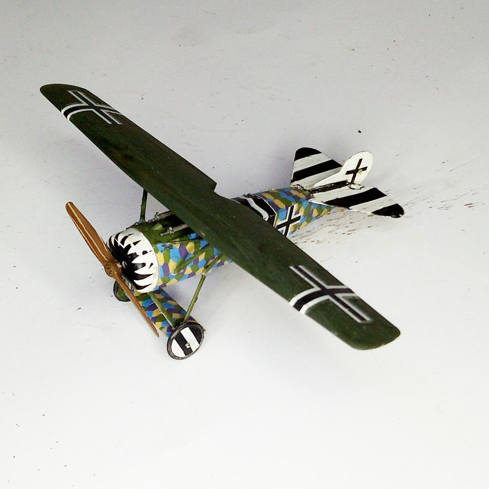

Aerei · scale model archive
Fokker E V
Fokker E V — Kit: Roden. Scale; 1/72 Jagdstaffel (Jasta) 10 156/18 (ObLt. Erich Loewenhardt) August 1918 World War 1 - Chambré Airfield, Laon FR #1/72…

Photo gallery
English description
Scale; 1/72
Jagdstaffel (Jasta) 10 156/18 (ObLt. Erich Loewenhardt) August 1918 World War 1 - Chambré Airfield, Laon FR
#1/72 #Roden
Descrizione italiana
Jagdstaffel (Jasta) 10 156/18 (ObLt. Erich Loewenhardt) agosto 1918 World War 1 - Chambré Airfield, Laon FR.